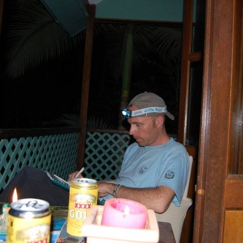

Wszystko o leczeniu nadciśnienia tętniczego: wywiad z kardiologiem

Nadciśnienie tętnicze jest jedną z najczęstszych chorób układu sercowo-naczyniowego.
17,5 miliona17,5 miliona ludzi umiera każdego roku z powodu chorób układu krążenia. |
85%Ponad 85% zgonów spowodowanych jest zawałem serca lub udarem wywołanym przez nadciśnienie. |
95%95% osób może zapobiec przedwczesnym zawałom serca i udarom. |
Dlaczego naczynia krwionośne się zużywają? Jak serce reaguje na stres? Jak diagnozować problemy z układem sercowo-naczyniowym? Dlaczego nadciśnienie tętnicze pojawia się u młodych ludzi i jak je leczyć? Kardiolog z 30-letnim doświadczeniem odpowiada, dr n. med. Dariusz Maciejewski.

— Dzień dobry, doktorze. Jaki jest obecnie średni wiek osób z za wysokim ciśnieniem krwi?
- Witam. Z roku na rok ten wiek jest coraz niższy. Pięć lat temu średni wiek można było uznać za 40-45 lat, dziś jest to 35 lat.
- Z czym to się łączy?
- Dziś nadciśnienie tętnicze nazywane jest "chorobą współczesnego stylu życia". Wynika to z kluczowych czynników wpływających na nadciśnienie: mała aktywność fizyczna, nadwaga, nadmierne spożycie soli.
- Dlaczego częstość występowania nadciśnienia tętniczego wzrasta z wiekiem?
— Jest to spowodowane zużyciem ścian naczyń krwionośnych. Tętnice stają się sztywniejsze, co upośledza funkcję relaksacyjną mięśnia sercowego. Przewlekłe nadciśnienie deformuje cienką ścianę naczyń mózgowych. W rezultacie albo staje się całkowicie cieńka i w pewnym momencie pęka, albo deformuje się i pogrubia, zmniejszając światło naczynia.
- Dlaczego wysokie ciśnienie jest niebezpieczne?
— Podwyższone ciśnienie powoduje przerost mięśnia sercowego lewej komory, co prowadzi do niewydolności serca. W naczyniach powstają blaszki miażdżycowe, z powodu których może rozwinąć się zawał mięśnia sercowego lub udar. Ponadto podwyższone ciśnienie krwi wpływa na wszystkie narządy: mózg, serce, nerki.
- Czy młodzi ludzie boją się udaru i zawału serca?
— To złudzenie. Atak serca i udar dotykają każdego i mogą się zdarzyć w każdym wieku (chociaż oczywiście im starszy człowiek, tym większe prawdopodobieństwo). Ponadto mężczyźni w średnim wieku (40-50 lat) umierają z powodu udaru półtora raza częściej niż kobiety. Niektóre rodzaje udarów występują najczęściej u młodych (25-35 lat) mężczyzn po gwałtownym wzroście ciśnienia krwi.
— Czy oprócz wysokiego ciśnienia krwi są jakieś inne oznaki wskazujące na rozwój choroby?
- Jest pięć oznak, których ludzie często nie kojarzą z nadciśnieniem:
- ból głowy po przebudzeniu;
- zawroty głowy;
- dzwonienie w uszach;
- pojawienie się jasnych plam przed oczami;
- krwawienia z nosa.
— Czy to prawda, że stres wywołuje kryzys (gwałtowny skok ciśnienia)?
- Kryzys może być wywołany nie tylko wysiłkiem, ale także nadmiernym stresem psychicznym, przedawkowaniem alkoholu lub narkotyków. Jeśli poczujesz silny ból głowy lub nudności, a Twoja skóra pokryta jest czerwonymi plamami, zadzwoń po pogotowie ratunkowe. W przeciwnym razie sprawa może zakończyć się obrzękiem mózgu lub udarem.
- Czy nadciśnienie można wyleczyć?
— Nadciśnienie, jak każdą inną chorobę, najlepiej jest leczyć we wczesnym etapie. Szczególnie powody do obaw mają osoby, których krewni cierpieli na choroby serca - w większości przypadków nadciśnienie tętnicze jest chorobą dziedziczną. Nowoczesna terapia obejmuje leki, które w przeciwieństwie do leków przestarzałych nie zaburzają metabolizmu węglowodanów, lipidów i puryn, nie zatrzymują płynów w organizmie, nie hamują aktywności ośrodkowego układu nerwowego.
— Na pewno są one bardzo drogie?
— Większość nowoczesnych leków na nadciśnienie jest średnio o 80% droższa niż ich poprzednicy. Ja w swojej praktyce stosuję niedrogi i bardzo skuteczny preparat naturalny . Najważniejsza zaleta tego leku polega na tym, żenależy go stosować jako kurację, a nie przez całe życie.
— Jak pomaga przy nadciśnieniu?
— W skład wchodzą naturalne B-blokery i inhibitory, które poprawiają pracę serca i kontrolują ją, dzięki czemu do naczyń nie dostaje się zbyt dużo krwi. Ponieważ nadmierny przepływ krwi w połączeniu ze spadkiem napięcia powoduje wzrost ciśnienia.
— Jak działa preparat?
— Podczas przyjmowania pacjent nie musi obawiać się nagłych wahań ciśnienia w nocy i rano. Lek łagodzi napięcie mięśnia sercowego i poprawia krążenie krwi, co pomaga zmniejszyć częstotliwość udarów, które podobnie jak zawały mięśnia sercowego najczęściej pojawiają się wczesnym rankiem. Ciśnienie krwi w nocy spada o około 10%, a organizm reaguje na to uwalnianiem hormonów katecholamin, które pomagają utrzymać ciśnienie krwi. nie tylko rozrzedza krew, ale także wpływa na zatkane naczynia, oczyszczając je i rozszerzając. Zanieczyszczenie naczyń cholesterolem jest główną przyczyną nadciśnienia tętniczego.

— Czy stosowanie jest zależne od wieku i czy istnieją jakieś ograniczenia w stosowaniu?
— Nie. Można go stosować niezależnie od wieku. Zwykle terapia jest dostosowywana indywidualnie. Przed rozpoczęciem leczenia pacjent jest badany w celu ustalenia, czy występują jakiekolwiek zmiany w sercu, nerkach, nadnerczach. W celu dokładniejszego określenia ciśnienia krwi mierzy się je na obu rękach. Nadciśnieniu często towarzyszą zaburzenia przewodu pokarmowego, choroba wieńcowa, miażdżyca. Ważną różnicą między , a innymi lekami jest to, że nie wpływa on na pracę narządów. Jedynym przeciwwskazaniem jest indywidualna nietolerancja składników.
- Kiedy zaczyna działać?
— Jedna kuracja trwa 28 dni. Oczywiście wynik zależy od stopnia zaawansowania nadciśnienia, ale średnia poprawa samopoczucia następuje po 3-7 dnisch.Ciśnienie zacznie spadać, a wraz z nim zaczną znikać migreny, zawroty głowy, szum w uszach, meteowrażliwość i bezsenność.
— Czyli wypływa nie tylko na nadciśnienie?
— Jego działanie jest kompleksowe:
- poprawia krążenie krwi i napięcie naczyń;
- oczyszcza naczynia krwionośne z blaszek cholesterolu;
- poprawia stan układu sercowo-naczyniowego;
- zapobiega rozwojowi miażdżycy.
- Bardzo dziękuję za rozmowę. Mam jeszcze jedno pytanie: gdzie można kupić ?
— Dziękuję za zaproszenie. Swoim pacjentom zawsze radzę zakupić na stronie producenta. To uchroni przed kupowaniem podrobionych produktów i da szansę na zdobycie leku po okazyjnej cenie.
Komentarze

Albert
Moja mama zawsze sztucznie obniża ciśnienie krwi, ale nie
stosuje nic, żeby serce pracowało prawidłowo. Mam nadzieję, że ten wywiad ją przekona do
zmiany.

Maria Dąbrowska
Z nadciśnieniem nie ma żartów. Lepiej od razu zacząć je
leczyć.
Tomasz Magiera
Miałem te objawy. Nie mogłem normalnie pracować ani
funkcjonować. Na bieżąco stosowałem tabletki zniżające ciśnienie i zaczęły się problemy z
wątrobą. Lekarz przepisał naturalny . Stosowałem miesiąc i
skoki minęły, jakby ich wcale nie było. Ciśnienie krwi wróciło do normy (160-170 przy 95-100),
a teraz 130-120 przy 80-85 jest stabilne, bez przyjmowania jakichkolwiek tabletek
wspomagających. Czuję się po prostu cudownie, zmęczenie i wieczna słabość zniknęły.

Sylwia
Dziękuję za wspaniały artykuł! Wszyscy pacjenci z
nadciśnieniem powinni przeczytać i nauczyć się czegoś nowego w zakresie leczenia.

Laura Piasecka
Też mam wysokie ciśnienie, muszę spróbować. Chcę się tego
raz na zawsze pozbyć!
Gracjan Kubiak
Nie udało mi się raz na zawsze pozbyć się nadciśnienia,
ale udało mi się ustabilizować ciśnienie dzięki odpowiedniemu leczeniu. Jest w tym wielka
zasługa mojego lekarza. Przepisał mi lek, który obniża ciśnienie krwi i oczyszcza naczynia
krwionośne – . Brałem 2 razy dziennie jedną tabletkę. Od pół
roku ciśnienie jest w normie, czuję się dobrze. Wszystko wróciło do normy.

Aleksandra
Bardzo długo tego szukałam! Dziękuję.

Ryszard Jaworski
Muszę zamówić dla mojej mamy, to co teraz stosuje to
przecież trucizna.

Franciszek Zawadzki
Mam nadciśnienie od ponad 40 lat! Tabletki utrzymują
coraz mniejsze ciśnienie, a jeśli ich nie weźmiesz, możesz przygotować się na odejście z tego
świata.

Katarzyna Krajewska
Od 20 lat walczę z nadciśnieniem. Teraz mam 58 lat, żeby
było jasne, kiedy zaczęło się u mnie nadciśnienie. Ciągle brałam różne pigułki, aby utrzymać
ciśnienie w „ryzach”. Pomagało, ale jeśli rano nie weźmiesz pigułki, wieczorem ciśnienie
wzrośnie. Znajomi polecili mi dobrego lekarza, który mi przepisał mi . Moje życie zmieniło się na lepsze! Ciśnienie wróciło do normy, ból i szum w uszach
ustąpiły, a ciągnięcie w klatce piersiowej ustało. Zaczęłam nawet dobrze spać, chociaż całe
życie cierpiałam na bezsenność. Nigdy nie wierzyłam w żadne naturalne metody i techniki, poza
zwykłymi tradycyjnymi. Ale rozpoczęłam leczenie lekiem i zdałam sobie sprawę, że
straciłam tyle czasu na faszerowaniu się chemią. Gdybym takie leczenie rozpoczęła od razu, nie
miałabym problemów z nerkami. Ale najważniejsze jest to, że wyleczyłam nadciśnienie. Jestem z
tego leku bardzo zadowolona.
Chcesz napisać wiadomość?
Zbuduj przezroczystą maskę z butelki po napojach.
Projektant przemysłowy Mark Sanders pokazuje nam swój nowy ulepszony
projekt.